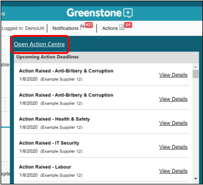
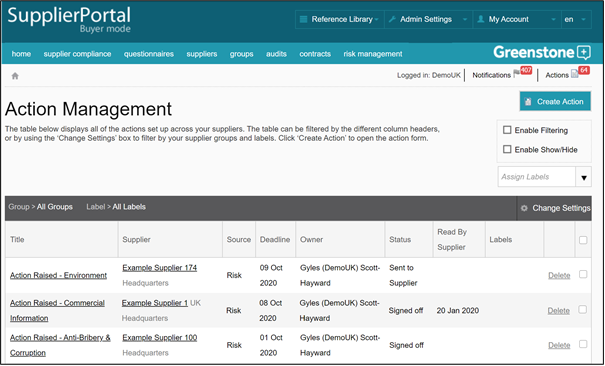

Any actions that have been created within Supply-Chain Sustainability (SCS) will be displayed in the Action centre.
Actions can be filtered using the change settings box or by enabling filtering on the grid. You can access each action by clicking on it, this will enable you to edit the action fields, send a message and attach documents for the supplier and sign off the action.
If you are using the risk management function it is advised that you manage your actions and sign them off using the risk management function (see Risk Management).

